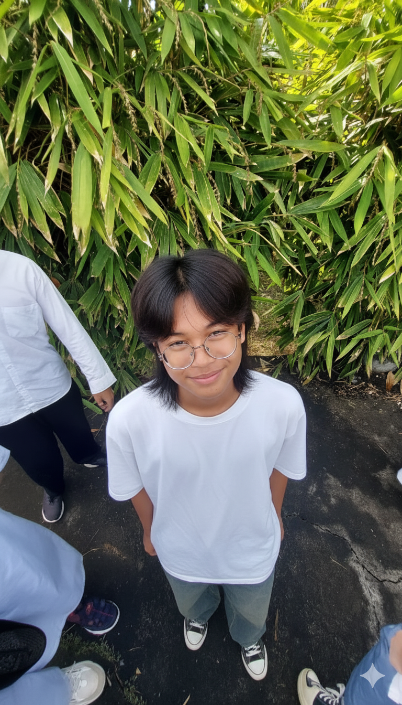

👤 Biodata Lengkap

Nama: Ryatsah Fatih Al Muntazhar
Kelas: 10B - IT
Tempat/Tanggal Lahir: Tanggerang Selatan, 9 Juni 2001
Tentang Saya
Saya adalah seorang santri di HSI Boarding School yang memiliki semangat tinggi dalam mempelajari ilmu agama dan teknologi. Saya percaya bahwa menggabungkan keduanya akan menghasilkan manfaat yang besar bagi umat. Motto saya: "Terus belajar, terus berkarya."
Hobi
- Membaca buku sejarah Islam.
- Memanah dan berkuda.
- Membuat desain antarmuka web (UI/UX).
Cita-Cita
- Menjadi seorang Da'i yang mumpuni.
- Menjadi pengembang web profesional.
- Melanjutkan studi di Universitas Islam Madinah.